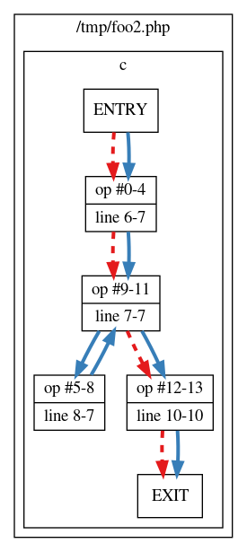

Code Coverage Analysis
Code coverage tells you which lines of script (or set of scripts) have been executed during a request. With this information you can for example find out how good your unit tests are.
Xdebug's code coverage functionality is often used in combination with PHP_CodeCoverage as part of PHPUnit runs. PHPUnit delegates the code coverage collection to Xdebug. It starts and stops code coverage through xdebug_start_code_coverage() and xdebug_stop_code_coverage() for every test, and uses xdebug_get_code_coverage() to retrieve the results.
Code coverage's main output is an array detailing which lines in which files have been "hit" while running the code with code coverage collection active. But the code coverage functionality can also, with an additional performance impact, analyse which lines of code have executable code on it, which lines of code can actually be hit (dead code analysis), and also can it do instrumentation to find out which branches and paths in functions and methods have been followed. The various options are documented with the xdebug_start_code_coverage() function.
Filtering
Xdebug 2.6 introduces filtering capabilities for code coverage. With a filter
you can include, or exclude, paths or class name prefixes (namespaces) from
being analysed during code coverage collection. A
typyical use case would be to configure the filter to only include your
src/ folder, so that Xdebug's code coverage analysis does not try
to analyse tests, Composer dependencies, or PHPUnit/PHP_CodeCoverage itself. If
you configure the filter correctly, you can expect a 2-fold speed increase for
code coverage runs
[1,
2,
3].
The filter works by tagging each executable unit (function, method, file) according to the configured filter. Xdebug can only do that the first time a specific executable unit is included/required, as the filtering happens when PHP parses and compiles a file for the first time. Xdebug needs to do it as this point, as this is also when it analyses which paths can run, and which lines of an executable unit can not be executed. Tagging executable units at this point, also means that the filter does not have to run every time Xdebug wants to count a line to be included in code coverage for example. It is therefore important to set-up the filter before the code is included/required. This currently can be best done through an auto-prepended file through PHP's auto_prepend_file setting.
To set-up a filter that only does code coverage analysis for the
src/ folder, you would call xdebug_set_filter() with:
Example:
<?php
xdebug_set_filter(
XDEBUG_FILTER_CODE_COVERAGE,
XDEBUG_PATH_WHITELIST,
[ __DIR__ . DIRECTORY_SEPARATOR . "src" . DIRECTORY_SEPARATOR ]
);
?>
With this filter set up, the code coverage information will only include
functions, methods and files which are located in the src/
sub-directory of the file in which this file resides. You can tell PHP to add
this prepend file by calling:
php -dauto_prepend_file=xdebug_filter.php yourscript.php
Or in combination with PHPUnit, when installed through Composer, with:
php -dauto_prepend_file=xdebug_filter.php vendor/bin/phpunit
The full documentation for the arguments to xdebug_set_filter() are described on its own documentation page.
Related Settings and Functions
- boolean xdebug.coverage_enable = true
- xdebug_code_coverage_started() : bool
- xdebug_get_code_coverage() : array
- xdebug_set_filter() : void
- xdebug_start_code_coverage() : void
- xdebug_stop_code_coverage() : void
Settings
boolean xdebug.coverage_enable = true #
Introduced in Xdebug >= 2.2
If this setting is set to false, then Xdebug will not set-up internal
structures to allow code coverage. This speeds up Xdebug quite a bit,
but of course, Code Coverage Analysis won't work.
Functions
xdebug_code_coverage_started() : bool #
Returns whether code coverage is active
Returns whether code coverage has been started.
Example:
<?php
var_dump(xdebug_code_coverage_started());
xdebug_start_code_coverage();
var_dump(xdebug_code_coverage_started());
?>
Returns:
bool(false) bool(true)
xdebug_get_code_coverage() : array #
Returns code coverage information
Returns a structure which contains information about which lines were executed in your script (including include files). The following example shows code coverage for one specific file:
Example:
<?php
xdebug_start_code_coverage(XDEBUG_CC_UNUSED | XDEBUG_CC_DEAD_CODE);
function a($a) {
return;
echo $a * 2.5;
}
function b($count) {
if ($count > 25) {
echo "too much\n";
}
for ($i = 0; $i < $count; $i++) {
a($i + 0.17);
}
}
b(6);
b(10);
var_dump(xdebug_get_code_coverage());
?>
Returns:
array
'/home/httpd/html/test/xdebug/docs/xdebug_get_code_coverage.php' =>
array (size=11)
5 => int 1
6 => int -2
7 => int -2
10 => int 1
11 => int -1
13 => int 1
14 => int 1
16 => int 1
18 => int 1
19 => int 1
21 => int 1The information that is collected consists of an two dimensional array with as primary index the executed filename and as secondary key the line number. The value in the elements represents whether the line has been executed or whether it has unreachable lines.
The returned values for each line are:
1: this line was executed-1: this line was not executed-2: this line did not have executable code on it
-1 is only returned when the XDEBUG_CC_UNUSED
is enabled and value -2 is only returned when both
XDEBUG_CC_UNUSED and XDEBUG_CC_DEAD_CODE are enabled
when starting Code Coverage Analysis through xdebug_start_code_coverage().
If path and branch checking has been enabled with the
XDEBUG_CC_BRANCH_CHECK flag to xdebug_start_code_coverage()
then the returned format is different. The lines array is returned in
a sub-array element lines, and separate information is returned
for each function in the functions element.
The following example illustrates that.
Example:
<?php
xdebug_start_code_coverage(XDEBUG_CC_UNUSED | XDEBUG_CC_DEAD_CODE);
function c($count) {
for ($i = 0; $i < $count; $i++) {
$i += 0.17;
}
}
c(10);
var_dump(xdebug_get_code_coverage());
?>
Returns:
array (size=1)
'/tmp/foo2.php' =>
array (size=2)
'lines' =>
array (size=5)
5 => int 1
6 => int 1
8 => int 1
10 => int 1
12 => int 1
'functions' =>
array (size=1)
'c' =>
array (size=2)
'branches' =>
array (size=4)
0 =>
array (size=7)
'op_start' => int 0
'op_end' => int 4
'line_start' => int 4
'line_end' => int 5
'hit' => int 1
'out' =>
array (size=1)
0 => int 9
'out_hit' =>
array (size=1)
0 => int 1
5 =>
array (size=7)
'op_start' => int 5
'op_end' => int 8
'line_start' => int 6
'line_end' => int 5
'hit' => int 1
'out' =>
array (size=1)
0 => int 9
'out_hit' =>
array (size=1)
0 => int 1
9 =>
array (size=7)
'op_start' => int 9
'op_end' => int 11
'line_start' => int 5
'line_end' => int 5
'hit' => int 1
'out' =>
array (size=2)
0 => int 12
1 => int 5
'out_hit' =>
array (size=2)
0 => int 1
1 => int 1
12 =>
array (size=7)
'op_start' => int 12
'op_end' => int 13
'line_start' => int 8
'line_end' => int 8
'hit' => int 1
'out' =>
array (size=1)
0 => int 2147483645
'out_hit' =>
array (size=1)
0 => int 0
'paths' =>
array (size=2)
0 =>
array (size=2)
'path' =>
array (size=3)
0 => int 0
1 => int 9
2 => int 12
'hit' => int 0
1 =>
array (size=2)
'path' =>
array (size=5)
0 => int 0
1 => int 9
2 => int 5
3 => int 9
4 => int 12
'hit' => int 1
Inside each function the branches element describes each branch.
Returns:
9 =>
array (size=7)
'op_start' => int 9
'op_end' => int 11
'line_start' => int 5
'line_end' => int 5
'hit' => int 1
'out' =>
array (size=2)
0 => int 12
1 => int 5
'out_hit' =>
array (size=2)
0 => int 1
1 => int 1The index is the starting opcode, and the fields mean:
- op_start
- The starting opcode. This is the same number as the array index.
- op_end
- The last opcode in the branch
- line_start
- The line number of the
op_startopcode. - line_end
- The line number of the
op_endopcode. This can potentially be a number that is lower thanline_startdue to the way the PHP compiler generates opcodes. - hit
- Whether the opcodes in this branch have been executed or not.
- out
- An array containing the
op_startopcodes for branches that can follow this one. - out_hit
- Each element matches the same index as in
outand indicates whether this branch exit has been reached.
Each function also contains a paths element, which shows all the
possible paths through the function, and whether they have been hit.
Returns:
1 =>
array (size=2)
'path' =>
array (size=5)
0 => int 0
1 => int 9
2 => int 5
3 => int 9
4 => int 12
'hit' => int 1The index is a normal PHP array index, and the fields mean:
- path
- An array containing the
op_startopcodes indicating the branches that make up this path. In the example,9features twice because this path (the loop) has after branch9an exit to opcode5(the start of the loop), and opcode12(the next branch after the loop). - hit
- Whether this specific path has been followed.
The Xdebug source contains a
file
containing a dump_branch_coverage function, which you can use the
show the information in a more concise way. The above array would instead be
shown as:
Returns:
c - branches - 00; OP: 00-04; line: 06-07 HIT; out1: 09 HIT - 05; OP: 05-08; line: 08-07 HIT; out1: 09 HIT - 09; OP: 09-11; line: 07-07 HIT; out1: 12 HIT; out2: 05 HIT - 12; OP: 12-13; line: 10-10 HIT; out1: EX X - paths - 0 9 12: X - 0 9 5 9 12: HIT
The function also generates a file /tmp/paths.dot, which can be
processed with the dot tool of the
Graphviz software to create an image.
Example:
dot -Tpng /tmp/paths.dot > /tmp/paths.png
This generates an image where a solid line means that the path has been followed, and a dashed line means that that path has not been followed.

xdebug_set_filter( int $group, int $listType, array $configuration ) : void #
Set filter
This function configures a filter that Xdebug employs when displaying stack traces or recording function traces, or when gathering code coverage. Filter configurations are applied to each execution unit (function, method, script body) independently.
The first argument, $group selects for which feature you want to
set up a filter. Currently there are two groups:
- XDEBUG_FILTER_TRACING
- The filter group used for filtering Stack Traces upon errors, as well as Function Trace.
- XDEBUG_FILTER_CODE_COVERAGE
- The filter group used for restricting the file paths which Xdebug would use for Code Coverage Analysis.
There are different kinds of filters that you can set. You can filter on either file path prefix, or fully qualified class name prefix (i.e. namespace). For each filter type you can a list of paths/namespaces to include or exclude. All matches are done in a case-insensitive way.
The XDEBUG_FILTER_CODE_COVERAGE group only supports
XDEBUG_PATH_WHITELIST, XDEBUG_PATH_BLACKLIST, and
XDEBUG_FILTER_NONE. All matches are done in a case-insensitive
way.
The constants to use as second "$list_type" argument are:
- XDEBUG_PATH_WHITELIST
Configures a list of file paths to include. An execution unit is included in the output if its file path is prefixed by any of the prefixes in the array passed as third
$configurationargument.Please note that a prefix of
/home/derickwould also match files in/home/derickrethans, so it is recommended that you add the trailing slash to the prefix in order to prevent this.- XDEBUG_PATH_BLACKLIST
Sets up a list of paths to exclude. An execution unit will be excluded from the output if its file path is prefixed by any of the prefixes from the
$configurationarray.- XDEBUG_NAMESPACE_WHITELIST
Configures a list of class name prefixes to include. An execution unit is included in the output if the class name, after namespace expansion, matches one of the prefixes in the
$configurationarray. An empty string value is special, and means functions that do not belong to a class. These are either user-defined, or built-in PHP functions (e.g.strlen()).Name space expansion happens automatically in PHP, and its engine will always see the full qualified class name. In the code below, the fully qualified class name
DramIO\Whisky:Example:
<?php
namespace DramIO;
class Whisky {
}In order to match for all clases within a namespace, it is recommended to specify the prefix with the namespace separator
- XDEBUG_NAMESPACE_BLACKLIST
- Sets up a list of namespaces to exclude. Execution units are excluded only
if their prefix matches one of the prefixes in the
$configurationarray. - XDEBUG_FILTER_NONE
- Turns off the filter for the selected
$group.
It is not possible to configure a filter for paths/namespaces at the same time,
and neither is it possible to configure which paths to exclude and include at
the same time. Only one of the four list types can be active at any one time.
It is possible however, to turn off the filter altogether by using
XDEBUG_FILTER_NONE.
To exclude all files in the vendor sub-directory in traces:
Example:
<?php
xdebug_set_filter( XDEBUG_FILTER_TRACING, XDEBUG_PATH_BLACKLIST, [ __DIR__ . "/vendor/" ] );
?>
To include only function calls (without class name), and methods calls for the
ezc and DramIO\ classes in traces:
Example:
<?php
xdebug_set_filter( XDEBUG_FILTER_TRACING, XDEBUG_NAMESPACE_WHITELIST, [ "", "ezc", "DramIO\" ] );
?>
To only perform code-coverage analysis for files in the src sub-directory:
Example:
<?php
xdebug_set_filter( XDEBUG_FILTER_CODE_COVERAGE, XDEBUG_PATH_WHITELIST, [ __DIR__ . "/src/" ] );
?>
xdebug_start_code_coverage( int $options = 0 ) : void #
Starts code coverage
This function starts gathering the information for code coverage. The information can be retrieved with the xdebug_get_code_coverage() function.
This function has three options, which act as a bitfield:
- XDEBUG_CC_UNUSED
- Enables scanning of code to figure out which line has executable code. Without this option the returned array will only have lines in them that were actually executed.
- XDEBUG_CC_DEAD_CODE
- Enables branch analyzes to figure out whether code can be executed.
- XDEBUG_CC_BRANCH_CHECK
- Enables path execution analysis.
You can use the options as shown in the following example.
Example:
<?php
xdebug_start_code_coverage( XDEBUG_CC_UNUSED | XDEBUG_CC_DEAD_CODE );
?>
xdebug_stop_code_coverage( bool $cleanUp = true ) : void #
Stops code coverage
This function stops collecting information, the information in memory will be destroyed. If you pass 0 as an argument, then the code coverage information will not be destroyed so that you can resume the gathering of information with the xdebug_start_code_coverage() function again.